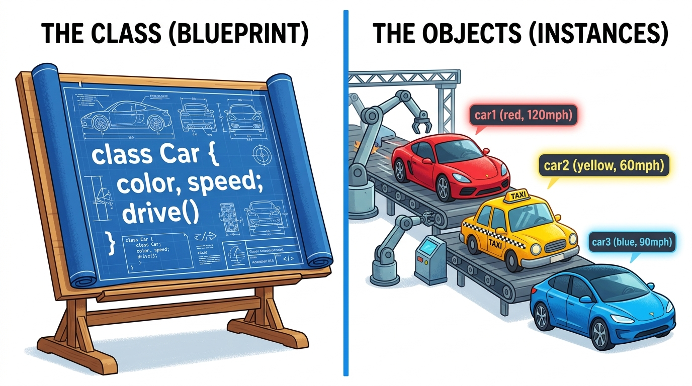

Bridge 5 — Classes & Objects (OOP 1)
Welcome to the defining paradigm of enterprise Java: Object-Oriented Programming (OOP)!
Instead of juggling disconnected variables and loose methods, OOP lets you model real-world concepts —
like bank accounts, user profiles, video game characters, and graphical windows — as unified packages
containing both State (data) and Behavior (actions).
Today you master the blueprint vs. instance model, constructors, the this keyword, and encapsulation.
- Distinguish between a Class (blueprint) and an Object (concrete instance in RAM).
- Diagram how Stack memory references point to objects instantiated in Heap memory.
- Construct objects using default and parameterized constructors with constructor overloading.
- Apply the
thiskeyword to eliminate variable shadowing and chain constructors cleanly. - Implement Encapsulation using
privateinstance fields and validatedpublicgetters/setters. - Override the
toString()method to produce meaningful, debug-friendly console output.
Your Learning Roadmap
1. The Object-Oriented Philosophy
In older procedural languages (like C), data and functions were separated: you had structs holding numbers, and disconnected functions operating on them. In Java, we think in terms of Objects: self-governing entities that bundle both:
- State (Attributes / Fields): What the object knows (e.g.
accountNumber,balance,ownerName). - Behavior (Methods): What the object does (e.g.
deposit(),withdraw(),printStatement()).
2. Blueprint vs. Object: The Master Analogy

3. Memory Anatomy: Stack References vs Heap Objects
When you write: BankAccount acc1 = new BankAccount("Alice", 500.0);, two distinct things happen in computer memory:
- The Heap: The
newkeyword allocates an active memory chunk on the Heap holding Alice's data (owner="Alice",balance=500.0) and generates a unique hexadecimal memory address (e.g.0x4F2A). - The Stack: Java creates a lightweight local reference variable
acc1on the Stack that stores the address0x4F2A— acting like a laser pointer aimed at the Heap object!
4. Constructors & the this Keyword
A Constructor is a special method invoked automatically the exact moment an object is created with new.
Its job is to set up the object's initial state.
- It has the exact same name as the class.
- It has no return type (not even
void).
public class Car {
// Instance Fields (State)
private String make;
private String model;
private int year;
// Parameterized Constructor
public Car(String make, String model, int year) {
this.make = make; // "this.make" refers to field; "make" refers to parameter
this.model = model;
this.year = year;
}
}this.make = make;?
The parameter name (make) is identical to the field name (make).
This is called variable shadowing.
The keyword this means "the current object whose constructor or method is currently running."
Writing this.make guarantees you are assigning the value into the object's instance field, not back into the parameter!
5. The First Pillar of OOP: Encapsulation
Encapsulation means bundling data and methods inside a protective capsule and hiding internal state from unauthorized external tampering.
The golden rules of encapsulation:
- Declare all instance variables
privateso outside code cannot read or mutate them directly. - Provide
publicGetters (accessors) to read values safely. - Provide
publicSetters (mutators) to modify values with strict validation guardrails.
public class BankAccount {
private String owner;
private double balance; // Protected from outside tampering!
public BankAccount(String owner, double initialBalance) {
this.owner = owner;
this.balance = Math.max(0.0, initialBalance);
}
public void deposit(double amount) {
if (amount <= 0) {
System.out.println("Deposit amount must be positive!");
return; // Guard clause prevents invalid state!
}
this.balance += amount;
}
public double getBalance() {
return this.balance;
}
}6. The toString() Method
If you print an object directly: System.out.println(account);, Java default output looks like:
BankAccount@5a07e868 (the class name plus its memory hash code). This is useless for debugging.
To fix this, we override toString() to return a pleasant, human-readable summary of the object's state:
@Override
public String toString() {
return "BankAccount[owner='" + owner + "', balance=$" + String.format("%.2f", balance) + "]";
}💻 Interactive Simulator: The Object Heap Inspector
Click below to instantiate objects and inspect how Stack references target independent Heap objects:
📡 Stack Frame (main)
🏠 Heap Objects Memory
⚠️ Top 3 Beginner Traps in Classes & Objects
BankAccount account; // Declared reference on stack, but NO "new" object on heap!
account.deposit(100); // CRASH! java.lang.NullPointerExceptionThe Fix: Declaring a reference variable does not create an object. You must initialize it with new BankAccount(...) before calling methods on it.
public class Student {
public void Student(String name) { ... } // DISASTER! This is a regular method, NOT a constructor!
}The Fix: Constructors NEVER have return types — not even void. If you add void, Java treats it as a weird method and no longer treats it as a constructor.
📝 Knowledge Check
new is an independent physical entity in Heap memory.
new keyword?private and providing validated public getters and setters is an example of Encapsulation. True or False?this keyword refer to when used inside an instance method or constructor?this is a self-referential pointer representing the current object instance whose method or constructor is being invoked.
🛠 Guided Lab: Robust BankAccount Class
BankAccount with private fields: String accountNumber, String accountHolder, and double balance.
public BankAccount(String accNum, String holder, double initialBal) using this.
deposit(double amount): only allow deposits greater than $0.00.
withdraw(double amount): reject withdrawals if amount > balance (overdraft protection!). Return boolean indicating success.
toString() to display the account holder and current balance cleanly formatted. Test with two separate accounts in main!
📺 Recommended Further Study
new.extends),
how interfaces define universal contracts (implements), and how Polymorphism
lets a single method treat hundreds of distinct objects uniformly!